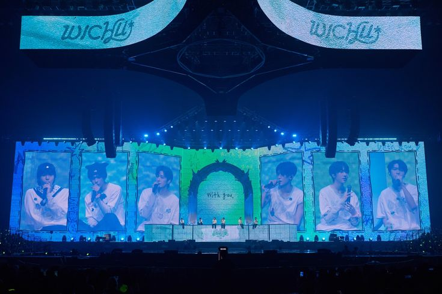
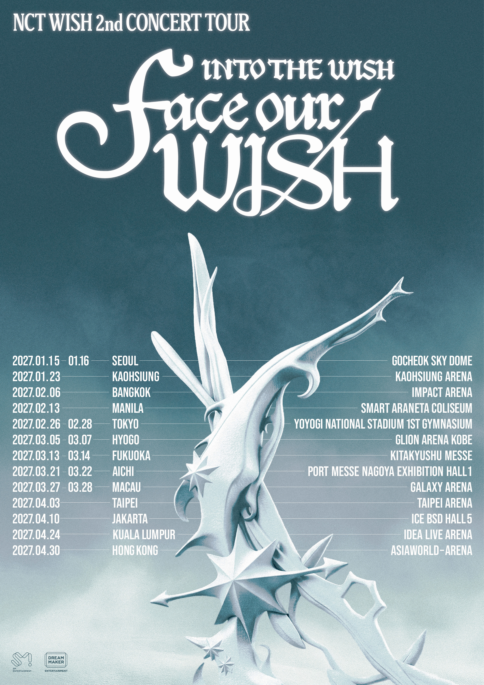

SEOUL
Gocheok Sky Dome
01 / OUR STORY
NCT WISH 帶著清澈的能量與無限可能出發。六個不同的聲音，在舞台上交會成一束光；每一次相遇，都讓「希望」有了新的形狀。
這趟旅程，想邀請你一起走。從第一個音符開始，去更遠的地方，也去更靠近彼此的地方。
認識六位成員
02 / MEET THE MEMBERS
一起認識讓 NCT WISH 閃閃發光的六位成員。
03 / TOUR 2027
INTO THE WISH : Face Our WISH
巡迴演唱會，即將啟程。
Gocheok Sky Dome
Kaohsiung Arena
Yoyogi National Stadium
Taipei Arena
更多場次與售票資訊，請留意官方公告。

04 / A NEW WISH
戴上耳機，聽聽 NCT WISH 的音樂。
點擊播放即可試聽。

NOW PLAYING
NCT WISH